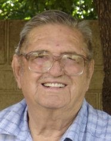

Surnames Individuals Sources Places Gallery

| GRAMPS ID: | I0055 |
| Birth Name: | Donald Christian Roelofsz |
| Gender: | male |
| Birth: | 1925-01-07 |
| Occupation: | Miner |
| Death: | 2007-04-26 at Vereeniging Medi-Clinic |
| Burial: | 1545 Nanescol Cemetry, 2007-04-30 at Nanescol Cemetry |
| Father: | Theodore Jooste Roelofsz (Birth) |
| Mother: | Anna Jeanette Mac Crocket (Birth) |
| Siblings: |
| Wife: | Dorothy Greatmore Welgemoed |
| Divorce: | 1968 |
| Children: | |
| Wife: | Susarah Roelofsz |
Vereeniging
Was the yongest child
Theodore Jooste Roelofsz
Donald Christian Roelofsz|
|Anna Jeanette Mac Crocket